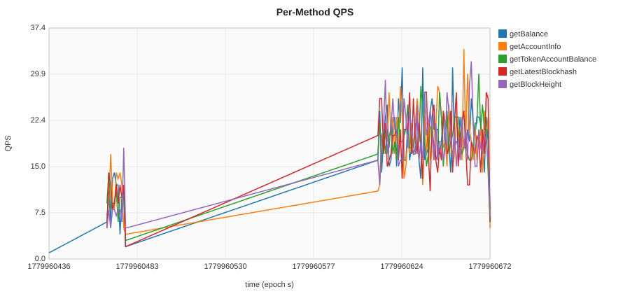
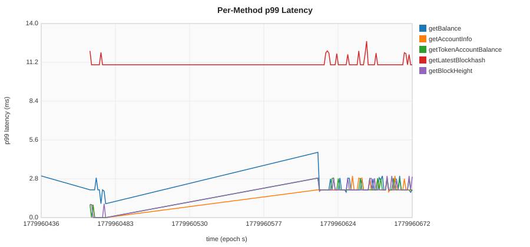
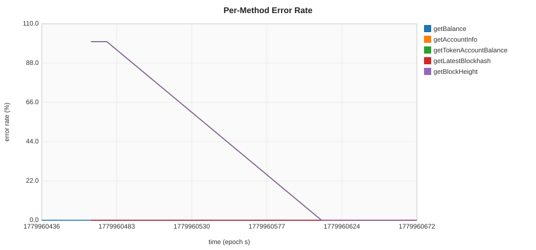
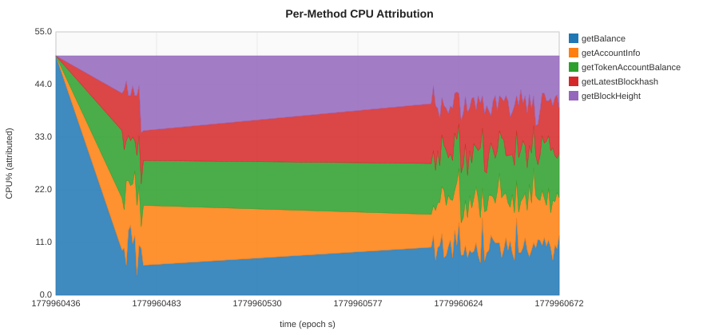

基于 proxy 层提取的每 RPC method 资源与延迟指标。展示 QPS 总量排名前 10 的 method。未被 DSL extractor 匹配的请求已剔除。
| 方法 | 请求总数 | 平均 p99 (ms) | 最大 p99 (ms) | 错误数 | 错误率 | CPU% 占比 (峰值) |
|---|---|---|---|---|---|---|
| getBalance | 1,320 | 2.19 | 4.70 | 0 | 0.00% | 100.0% |
| getAccountInfo | 1,317 | 1.84 | 3.00 | 113 | 8.58% | 35.4% |
| getTokenAccountBalance | 1,297 | 1.85 | 2.85 | 99 | 7.63% | 29.2% |
| getLatestBlockhash | 1,286 | 11.18 | 12.70 | 0 | 0.00% | 28.1% |
| getBlockHeight | 1,285 | 1.87 | 3.00 | 86 | 6.69% | 32.1% |
压测窗口内每秒每 method 请求数。用于识别 method 级流量尖峰与不均衡。

每秒每 method 的 p99 延迟。识别哪些 method 主导尾延迟以及何时开始劣化。

每秒每 method 的错误率 (status >= 400)。将失败定位到具体的 RPC 调用。

按 weight = method_count / total_count 把 CPU% 归因到每 method 每秒。堆叠面积图展示 method 级资源贡献。
